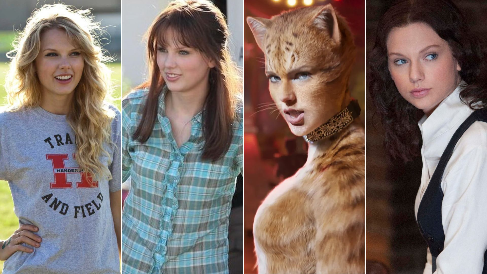
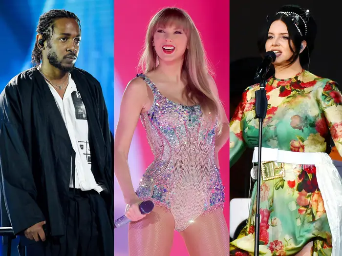

Taylor Swift é uma cantora, compositora e atriz americana. Com uma carreira de sucesso, Taylor teve participação em vários filmes, sendo até diretora de alguns.
Filmes e Documentários
Filmes com a colaboração da Taylor Swift

Taylor Swift em Filmes Referência da imagem
Título
Ano
Papel
Genero
Função
O Lorax: Em Busca da Trúfula Perdida
2012
Audrey (voz)
Animação
Dubladora
O Doador de Memórias
2014
Rosemary
Ficção Científica
Atriz
Miss Americana
2020
Taylor Swift
Documentário
Atriz
Folklore: The Long Pond Studio Sessions
2020
Taylor Swift
Documentário Musical
Atriz, Diretora e Roteirista
All Too Well: The Short Film
2021
"garota"
Curta-metragem
Roteirista, Diretora e atriz (participação especial)
Amsterdam
2022
Elizabeth Meekins
Mistério
Atriz
Taylor Swift: The Eras Tour
2023
Taylor Swift
Filme Concerto
Atriz e Produtora
Colaborações de Taylor Swift
Feats de Taylor Swift

Taylor Swift e Kendrick e Lana Del Rey Referência imagem